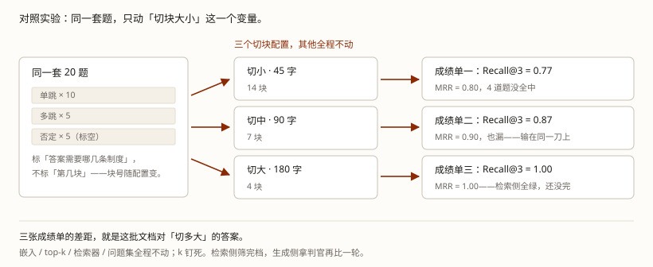

建知识库的人凑在一起，话题永远是切块切多大。有人说切小才准，有人说切大才全，有人甩出一份基准：512 token 最好。第 4 课也给了起步值：250～500 token。
这些数都有出处，也都帮不到你。它们是别人的文档、别人的问题跑出来的。「切多大」没有通用答案，只有「这批文档、这类问题」的答案。
答案怎么来？不猜，量。把同一批文档按三种大小各切一遍，拿同一套问题去考，三张成绩单的差距就是答案。
学完这课，你能攒一套 20 题的标注集、建三个切块配置、跑出能对账的成绩单，写出一句能抄走的结论。
评测不是跑一次分，是一次对照实验：同一套题、同一把尺子，只动一个变量。
动了几个变量，分数变化就说不清是谁的功劳；变量不动全，差距才归得起因。
第 9 课立了评测的规矩：检索和生成分开评，检索侧看 Recall@k、MRR 那四个数，评估集要有单跳、多跳、否定三类题。那些是「怎么量」。量完要能回答「这批文档该切多大」，这一课把尺子用成一次实验。
实验台就是贯穿全轨的员工手册：一份 598 字、20 条制度的文档。对照组三个：切小（45 字）、切中（90 字）、切大（180 字）。演示按字数切，真实工具按 token 切，第 4 课说过量级一样。
其余一切钉死：同一个玩具检索器、同一个 top-k = 3、同一套题。k 变了、题变了，三张成绩单就没法比。

实验的第一件活不是切块，是出题。配套脚本里有一份 20 题的标注集模板，跑起来先打印它自己：
[1] 标注集模板：20 题（单跳 10 / 多跳 5 / 否定 5），文档 598 字、20 条制度
标的是「答案需要哪几条制度」，不是「在第几块」——块号换配置就作废，内容不会。
单跳：「入职四年，年假有几天？」 → 该命中制度 [1]
多跳：「我入职四年，没休完的年假能留到什么时候？」 → 该命中制度 [1, 2]
否定：「公司有班车吗？」 → 标空（专测拒答）单跳 10 道、多跳 5 道、否定 5 道，三类都有（第 9 课讲过为什么一类不能缺）。
标注只标一件事：答案需要哪几条制度。比如「请四天假要走什么流程？」标的是「制度 3 ＋ 制度 4」，三天以内口头报备、三天以上走系统。刻意不标「在第几块」——块号换个切块大小就作废，内容不变。标内容，三个配置才能共用同一套题，这是对照能成立的前提。
20 条制度没条条出题。标注集求的是代表性，不是穷尽：常问的覆盖到就行。评测集的真实做法也是先少后多。第三方实测（第 7 节会引的那份 5 组配置实验）的原话是 10～15 道精题胜过 100 道泛化题；题目先让模型起草，再由熟悉业务的人改写成用户真会问的样子：「员工的年假政策是什么」要改成「我 2021 年 3 月入职，现在能休几天」。真实项目按第 9 课的建议，50～100 条起步；这一课用 20 题做演示，够跑通流程。
同一套题在三个配置下各跑一遍检索，15 道有答案的题进平均分，5 道否定题单独处理。成绩单是脚本实跑出来的：
[2] 三个切块配置，其他一切不动（k = 3 钉死，15 道有答案的题进平均分）
配置 块大小 块数 Recall@3 Hit rate@3 Precision@3 MRR
切小 45 字 14 0.77 0.80 0.38 0.80
切中 90 字 7 0.87 0.93 0.36 0.90
切大 180 字 4 1.00 1.00 0.36 1.00先看 Recall（该拿的拿到多少）：切小 0.77，切大 1.00，差距拉开得很清楚。「直觉说切小更精准」在这批题上不成立——Precision 三档几乎一样，切小还漏得最多。MRR 也是切大领先。
看到这里别急着抄结论。成绩单只回答检索侧的事，第 7 节还有生成侧的账。
平均分只告诉你「谁好」，逐题对账才告诉你「为什么」。15 道题里，4 道的结论随配置翻转：
请两天假要走什么流程？ 缺3 缺3 全中 ◀ 三个配置不一致
请五天假要走什么流程？ 缺4 全中 全中 ◀ 三个配置不一致
请四天假要走什么流程？ 缺3,4 缺3 全中 ◀ 三个配置不一致
请两天病假要交证明吗？流程怎么走？ 缺3 缺3 全中 ◀ 三个配置不一致
（4 道题的结论随配置翻转——这些题就是实验在帮你抓的）4 道题全指向同一条制度：制度 3，「请假三天以内，向直属主管口头报备」。45 字和 90 字两档的刀口，恰好都落在它的「口头报备」中间——这句话被切碎了，哪一块里都不完整，检索器再强也找不回来。脚本把丢分的账分开记：
[4] 丢分的账，分两种：切碎了（切块的锅）vs 块在但没进前 k（检索的锅）
切小（45 字，14 块）：切碎 2 条 [3, 18]；另有 1 道题块在但没挤进前 3
切中（90 字，7 块）：切碎 2 条 [3, 18]；另有 0 道题块在但没挤进前 3
切大（180 字，4 块）：切碎 1 条 [18]；另有 0 道题块在但没挤进前 3两种丢分，救法不同。切碎的，回去挪刀口：按句子边界切、加重叠、上父子块，都是第 4 课的活。块在但没进前 k 的，才轮到检索侧：改问法（第 7 课）、调 top-k、换嵌入（第 5 课）。切小那 1 道「块在但没进前 3」的题，是「请五天假要走什么流程？」——「申请单」那条制度完好，只是它所在的块没挤进前三。混在一起看，就会像第 9 课说的那样，两头一起调，最后记不清谁修好了什么。
这份标注集还把第 4 课的一句话兑现成了数字：尺寸差一点损失小，边界切错损失大。切小比切中块小了一半，Recall 只差 0.10；真正拉开差距的，是那一刀切坏了谁。
切大在检索侧全绿。但看 [4] 那行账：它也切碎了一条制度——第 18 条「培训报销上限 3000 元」。分数为什么纹丝不动？因为标注集里没有一题问它。
这是对照实验最隐蔽的坑：评估集没覆盖的地方翻了车，成绩单永远显示全绿。切大不是没翻车，是翻在你看不见的地方。换个标注集，只要有一题问培训报销，切大的 Recall 立刻掉下来。
所以结论不能只写「哪个配置赢」，还得交代一件事：这套题覆盖了什么、没覆盖什么。标注集越大、越贴真实问题，结论才越敢下。这也是为什么标注集要一直长大——第 9 课说线上答错的题进回归集，补的正是这些盲区。
5 道否定题不进平均分（它们没有「该命中的段」，第 9 课立的规矩），单独看分数：
[5] 否定题（5 道）不进平均分，单独看：拒答这关不随切块变
切小：否定题 top-1 最高 2；有答案的题 top-1 最低 1 → 两档有重叠：阈值定不住，这就是否定题抓出来的问题否定题的最高分是 2，有答案的题最低分是 1——两档重叠，靠一条分数线挡不住硬答。这不是玩具检索器独有的毛病：阈值闸门本来就粗（第 6 课讲过它怎么用）。第 8 课的两道闸门补的就是这个：分数不进提示词是一道，进了提示词没有答案、回兜底句是另一道。否定题量的就是这套机制，它跟切块大小无关，三个配置下一个样。
检索侧的赢家还不算赢。切大的每一块挤着七八条制度，塞进提示词的就是第 8 课量过的局面：资料多、噪音多、答案容易被埋。检索四尺看不见这些，得拿生成侧的数来量——忠实度和相关性逐题打分，人工看不过来，让判官先上。
判官的偏差和校准，第 9 课讲过四条，这里不重复。这一课补的是它在实验里的位置：判官是流水线上的初评工具。提示词模板就在脚本里，长这样：
┌─ 判官提示词 ──────────────────────────────
│ 你是评审员。下面有【资料】和【回答】。
│ 只判一件事：回答里的每一句断言，能不能在资料里找到依据。
│ 逐句输出：支持 / 不支持；最后一行给比例 = 支持数 ÷ 总句数。
│ 资料里有、但回答没用的内容，不算错；回答里多出来的数字、日期、
│ 条款，资料里找不到就是「不支持」。不许补充常识。
│ 【资料】{{ 把检索到的几段原文贴进来 }}
│ 【回答】{{ 系统的回答贴进来 }}
└──────────────────────────────────────────生成侧的分数会推翻检索侧的直觉。一份第三方实测（RAGAS＋开源工具做的 5 组配置对照，员工手册场景，跟本课实验台同款）里，把「不得编造」写得很重的那组，检索侧没有任何变化，回答却全部变成拒答，相关性指标直接归零。另一组收紧阈值，同样的结果。这就是第 8 课预告过的反例：约束过头的代价，检索分完全照不见。那组实验还有两个教训。一是参数改动非线性：阈值从 0.2 调到 0.35，系统直接失效，别从一次对照外推「再调一点会更好」。二是指标要跟业务目标对齐，「宁可不答、不能答错」的场景下，拒答被判官记成低忠实度（那组实测里低到 0.025），不是系统坏了，是评估假设跟业务目标错位了。数字出自个人博客的实测，当实验设计看，不当基准抄。
把检索侧、生成侧串起来，一次评测的收尾是一段结构固定的结论。脚本替你把数填好了：
[6] 结论模板（直接抄走：检索侧先筛，生成侧再比）
这批文档（598 字、20 条制度）和这 15 道题下：
切小（45 字，14 块）：Recall@3 = 0.77，MRR = 0.80，Precision@3 = 0.38 （Recall 掉了，先淘汰）
切中（90 字，7 块）：Recall@3 = 0.87，MRR = 0.90，Precision@3 = 0.36 （Recall 掉了，先淘汰）
切大（180 字，4 块）：Recall@3 = 1.00，MRR = 1.00，Precision@3 = 0.36 （候选）
粗筛线：Recall 差距 ≤ 0.1 算平手（线自己定，写进结论）
→ 检索侧候选：切大。
被淘汰的档先别扔：回 [4] 看它输在切碎还是没进前 k——切碎的挪边界或加重叠再跑，
那是另一轮实验（还是只动一个变量）。
→ 最后一步：候选的几个档各生成一遍，拿判官比忠实度和相关性（见 [7]），再定档。
→ 结论句：这批文档先按「切大」跑；每次改动后，同一套题重跑再比。注意这句结论的形状：「这批文档」＋「这批问题」＋「先按哪档跑」＋「重跑条件」。四样都在，结论才能复现；换一批文档或换一批问题，照着重跑一遍就行，不用重新发明流程。粗筛线（差距多少算平手）没有标准值，是你自己定的，但要写进结论——别人读到「切大 1.00、切中 0.87」，得知道你凭什么淘汰切中：0.13 的差距过没过你那条线。
这份脚本里的结论是「切大」，因为演示文档只有 598 字，180 字一块恰好装得下；你自己的文档长得多、结构复杂，答案多半不在「最大」那一档。模板是通用的，数字永远是你的。
脚本在工作区：exercises/rag/0010-eval-configs.py。它不装包、不调任何模型：一份 20 条制度的员工手册、三个切块配置、一套 20 题标注集，把上面全部环节跑一遍。把 FACTS 和 QUESTIONS 换成你自己的文档和问题，流程原样能用。
python exercises/rag/0010-eval-configs.pyWindows 终端若中文乱码，先执行 chcp 65001。检索器仍是玩具（二字组合＋点积），切块按字数切——量的是方法，不是这批数字。上面各节贴的是实跑输出的摘录（[1] 摘了前五行、[3] 只摘了翻转的 4 行、[5] 只摘了切小一行），跑了就能逐行对上。
三处值得多看一遍：
六道题，标注集、对照实验、逐题对账、盲区、判官和结论模板各过一遍。
Q1 同事甩来一篇基准测试：「512 token 最好」。该怎么回应？
Q2 标注集里每道题该标什么？
Q3 对照实验为什么一次只动一个变量？
Q4 脚本把「切小」丢的分分成哪两种？
Q5 切大切坏了一条制度，成绩单却纹丝不动。为什么？
Q6 检索侧三张成绩单里「切大」全绿，下一步做什么？
回上一课：RAG · 第 9 课 · 翻车诊断与评估（尺子是那一课给的）
顺着往下：第 11 课 · Agentic RAG（在写）——固定流水线量完了，下一步是让模型自己决定查不查、查几次
相关：RAG · 第 4 课 · 建库：清洗与切块（三档切法与「把精力留给边界」）
术语表：RAG 评测 · 对照实验 / 标注集